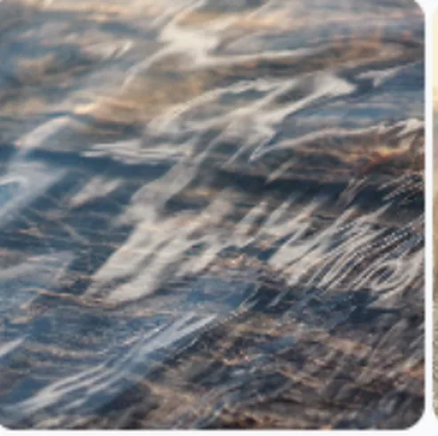
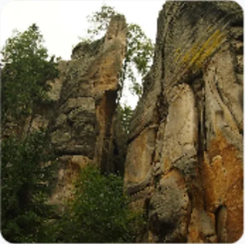
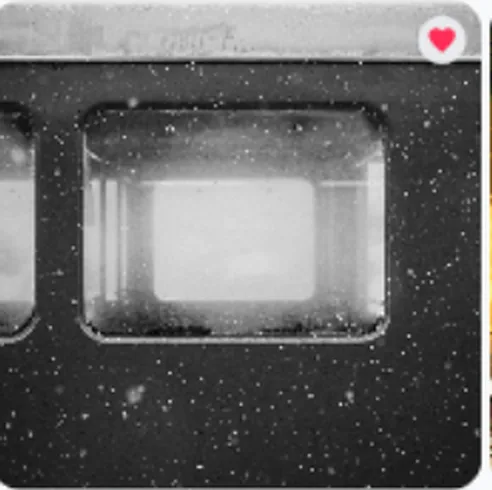
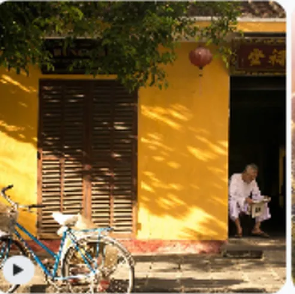
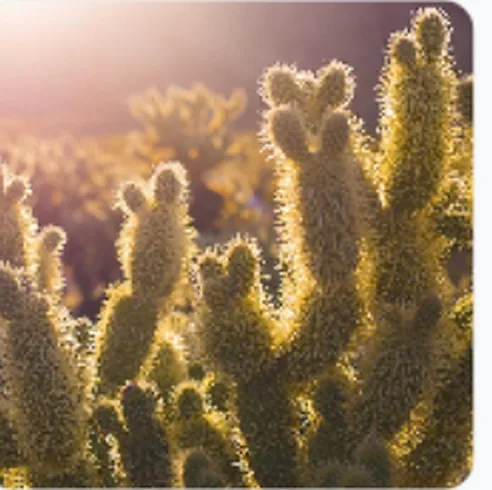
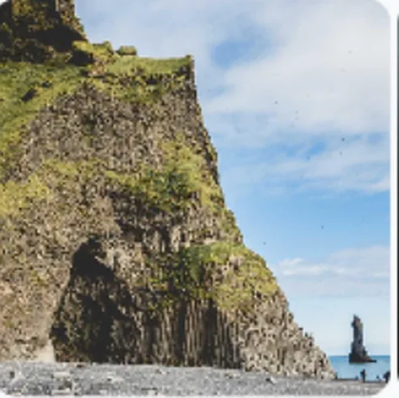
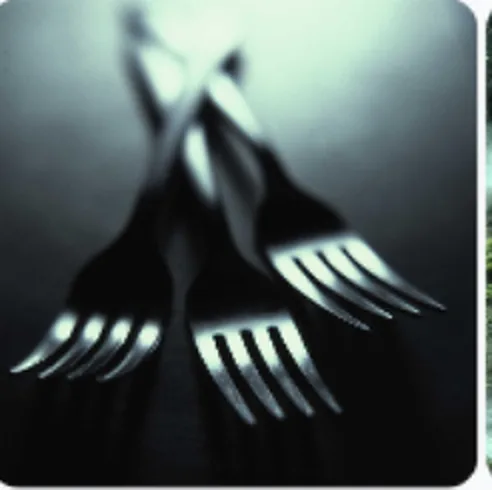
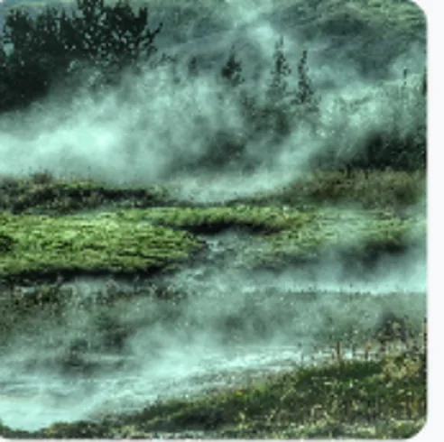
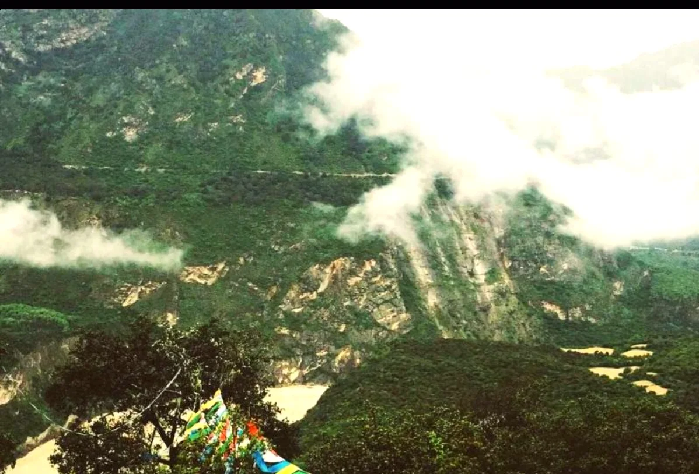
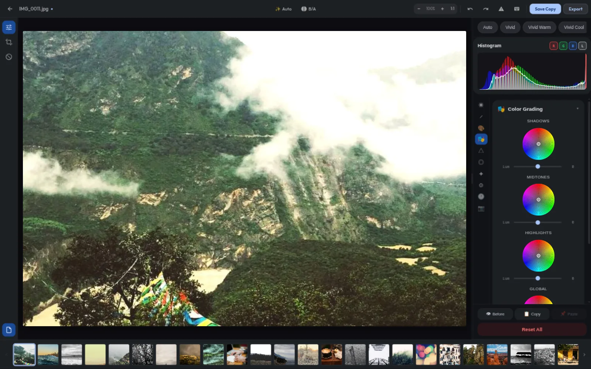

01
The mosaic
Photos of every shape tessellate into one endless wall. Hover, and the wall breathes.
Tetris-style · cinematic hoverMaterial 3 Expressive / Offline-first / Apache-2.0
A desktop gallery that hangs your photographs like an exhibition — and develops them like a darkroom. RAW-native, GPU-rendered, and entirely offline.
( 01 ) The Wall
Galleria sweeps through your folders, reads every EXIF heartbeat, and lays the result out like an exhibition — a tessellating mosaic, grouped by month, searchable by anything.
12 / 12 frames — demo library



♥




Every frame above was indexed locally — no uploads, no profiles, no cloud.
Then the lights go out ↓A local-first photo library
Galleria is for people who keep their work on their own disk. It reads every EXIF heartbeat, gives every aspect ratio a place to belong, and never asks for an account to show you your own photographs.
No cloud · No accounts · No subscription —
it indexes everything and phones no one.
( 02 ) The Darkroom
Past this line, edits are 32-bit float, scene-referred, and rendered on your GPU.
LightCraft
Since v0.15, edits run on LightCraft — an open-source, scene-referred develop engine. Every slider is 32-bit float maths in wide-gamut colour, pushed through wgpu. Your pixels never leave the machine.
Every edit is metadata — exposure, tone curves, the 8-band mixer, grading wheels, grain. Undo forever, snapshot anywhere, originals untouched.
DNG, CR2/CR3, NEF, ARW, RAF, ORF, RW2 and friends — demosaiced decodes, not JPEG stand-ins, with real RAW thumbnails in the gallery.
Linear Rec.2020 → OkLCh, Kelvin white balance, point and parametric curves, and one-click auto tone from scene analysis.
Ratings, flags and develop settings live in XMP sidecars, so your edits ride along with the file — even outside Galleria.

Photos stay on disk. This demo is a simulated grade.

Also in the box
( 03 ) Material 3 Expressive
The app ships five tonal palettes across true dark and light modes. So does this page: pick a mood and the whole exhibition re-inks itself — surfaces, accents, glows and all.
Coral — warm, low afternoon light
Dynamic tonal palettes · built on M3 colour roles · true dark & light in the app
( 04 ) The Anatomy
Six details that turn a folder of files into a place you want to spend time. No dashboards, no badges, no upsell — just a quiet obsession with the photograph.
Photos of every shape tessellate into one endless wall. Hover, and the wall breathes.
Tetris-style · cinematic hoverTonal palettes tint the entire surface, not just the buttons.
Demosaiced decodes — not JPEG stand-ins.
Find exactly what you need in a keystroke.
No accounts. No sync. No telemetry.
Your edits travel with the file.
( 05 ) The Story
“The main focus of this
— Aryan, the architect
project was to learn.”
Galleria began as a student's question: can a local Linux app feel as fluid and cinematic as the modern web?
The answer became a playground — Svelte 4's fine-grained reactivity, Rust's memory safety behind a Tauri shell, and Material 3 Expressive as a design thesis. The gallery came first. Then the darkroom. Then the portable edits.
AI drafts the code. A human reads every line, architects the system, and ships the release. The education is the point.
React, Tauri and a first gallery.
React → Svelte 4. Bundle down 83%.
LightCraft, wgpu and a 32-bit float pipeline.
XMP sidecars. v0.16.2.
( 06 ) Free & open source
Download the latest build for your machine. No account, no trial, no telemetry.